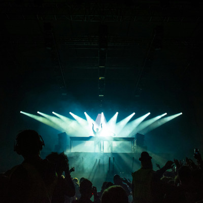

Já pensou em um lugar onde não existe problema, não existe tristeza, não existem pessoas ruins? Pois é, a pista de dança, lugar sagrado, é onde encontramos nossos irmãos. Pessoas que nem conhecemos se tornam amigos, todos dançando na mesma vibração, ligados pela mesma sintonia, celebrando a vida com muito amor, respeito e fraternidade.
